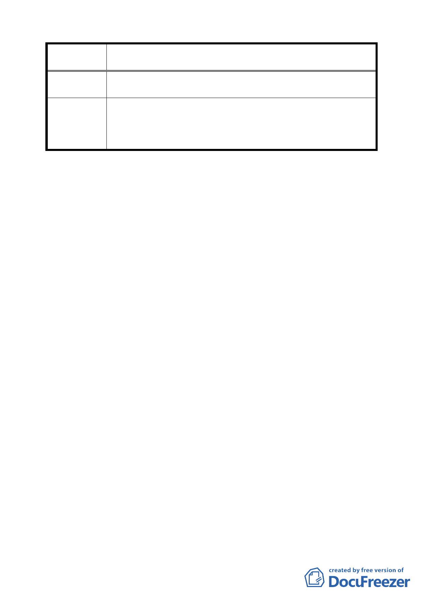

案
名
變更臺北市北投區豐年段一小段 478、479 地號土地農業區為
保存區（農禪寺）主要計畫案
三、原有基地低窪，變更後基地提高，緊鄰原有居民建築物
之基地，建議加寬緩衝綠地。
一、有關該基地對外交通動線規劃問題建議納入中長程計畫
委 員 會 議 中辦理。
決 議 二、有關該基地排水問題請開發單位妥善處理。
三、依原公展計畫請開發單位參考辦理。
臨時提案四
案名：擬定臺北市北投區豐年段一小段 478、479 地號保存區（農
禪寺）細部計畫案
說明：
一、本案係市府 94 年 8 月 25 日以府都規字第 09413596300 號
函送到會。
二、法令依據：都市計畫法第 22 條
三、辦理單位：臺北市政府（文化局）
四、計畫範圍：詳計畫圖所示
五、變更理由及內容：詳計畫書
決議：同意依提會補充資料及修正後計畫書修正通過。
肆、散會（17 時 50 分）
四六